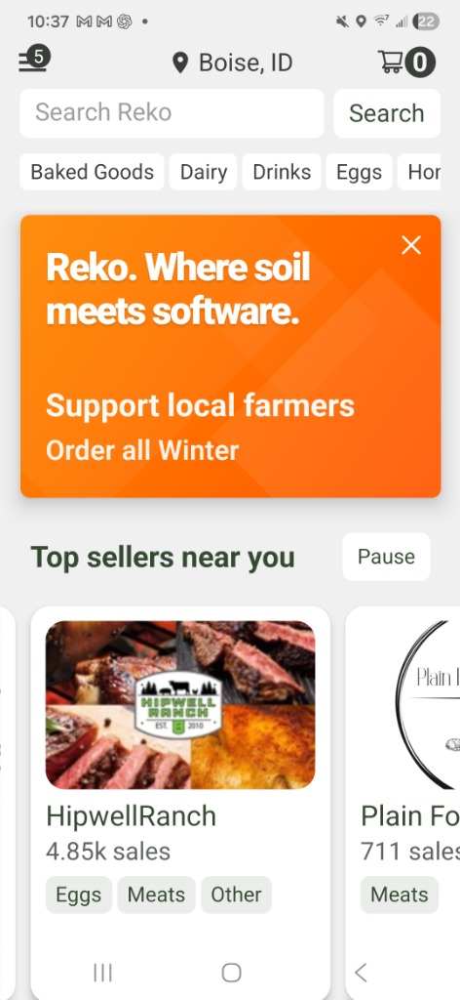

Get the freshest food from your local farmers and makers, ordered easily and ready when you are.

The easiest way to eat local. Pre-order online and pick up fresh food right in your neighborhood.
What changes: demand aggregates before market day. Producers grow to real orders. Markets see real performance data. Communities buy locally with convenience.
Pre-orders turn “maybe” traffic into confirmed baskets. Markets and producers plan with clarity.
Harvest, pack, and prep to real orders. Reduce unsold inventory and last-minute scrambling.
Repeatable pickup windows and simple workflows make participation sustainable.
See how REKO helps local markets and producers thrive.
"Since using REKO, our pre-orders have doubled. We finally know exactly what to harvest and pack before we even arrive at the market."
— Sarah T., Organic Farmer
"Managing our weekly market used to be chaotic. The predictable loop means an easier life for our volunteers and happier customers."
— Marcus L., Market Coordinator
"I love being able to browse and buy from my favorite local producers ahead of time. I can just show up and pick up my groceries in minutes."
— Emily R., Frequent Shopper
Pick the audience path that fits. Each page focuses on outcomes, workflows, and what success looks like.
Move from weather and foot traffic to predictable, pre-order driven commerce.
Plan harvest and packing to confirmed demand. Reduce waste and admin work.
Convenience without losing the relationship. Local food, made easier.
REKO supports markets, pickup hubs, and producer networks. Start with one location, then expand as demand stabilizes.